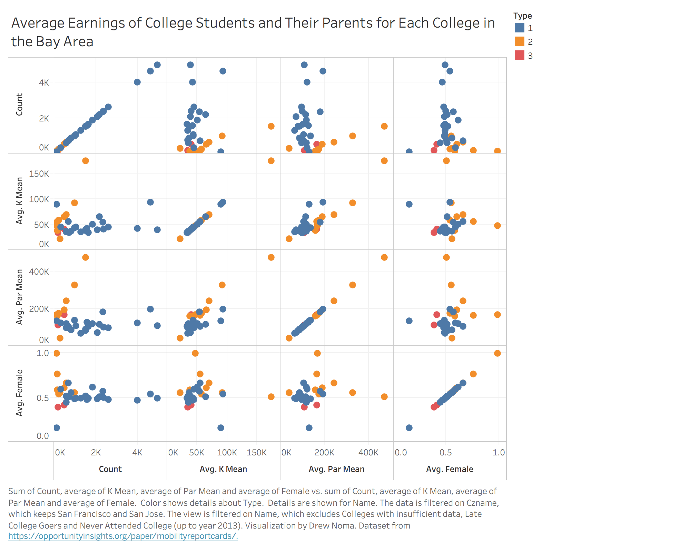

Prototypes and Implementations
Description
Each data point represents each state the data was collected from. The "type" of college attended is encoded by color.
Type
- 1 = public college
- 2 = private non-profit college
- 3 = for-profit college
Prototype
